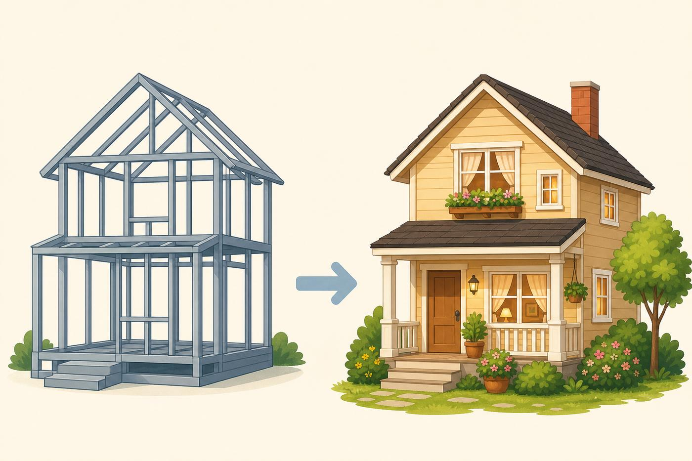
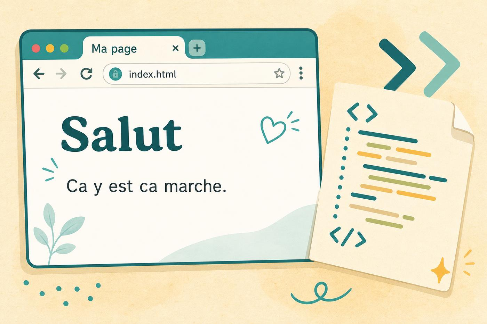
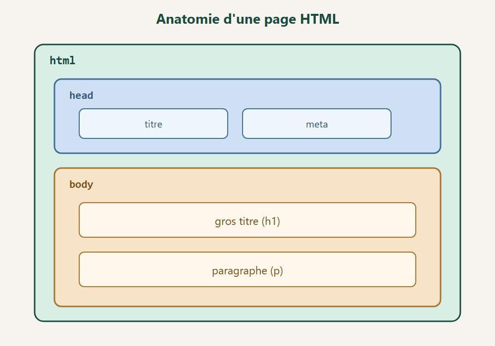
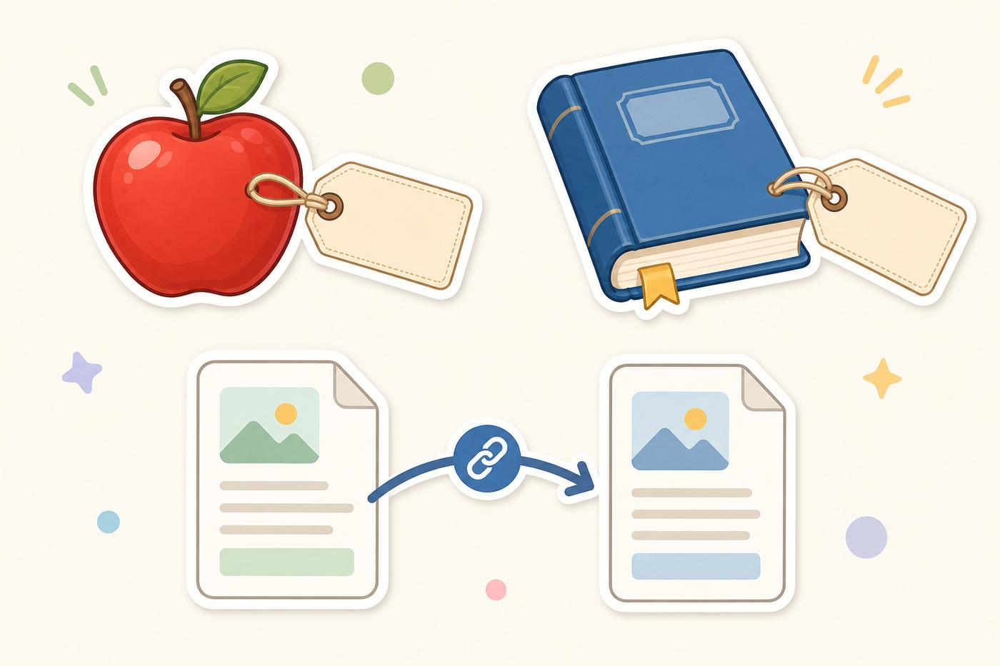
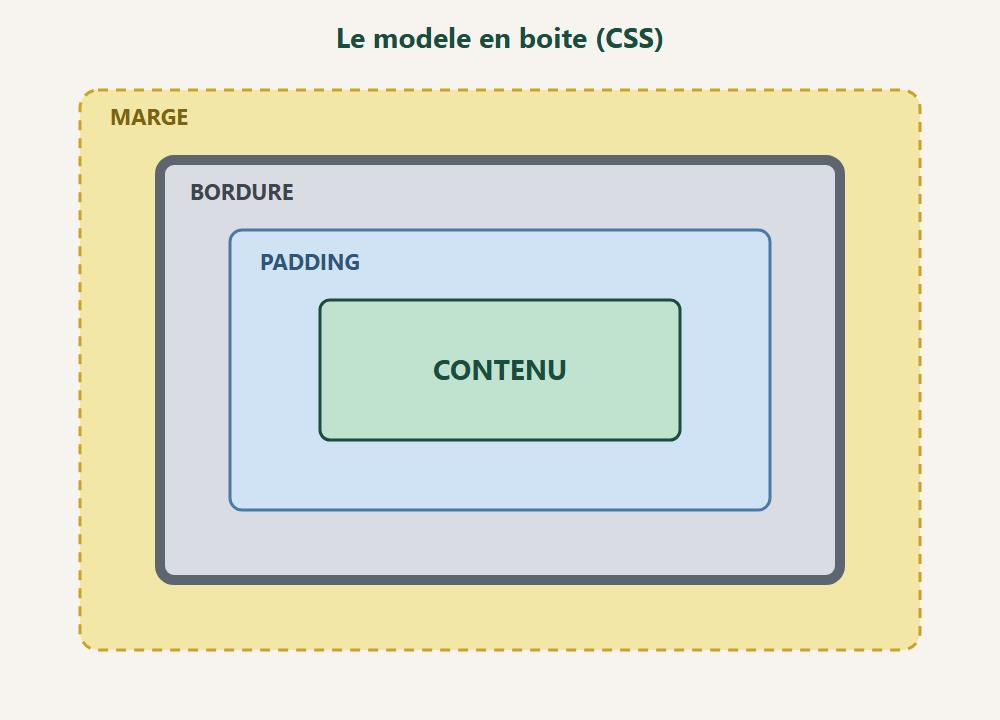
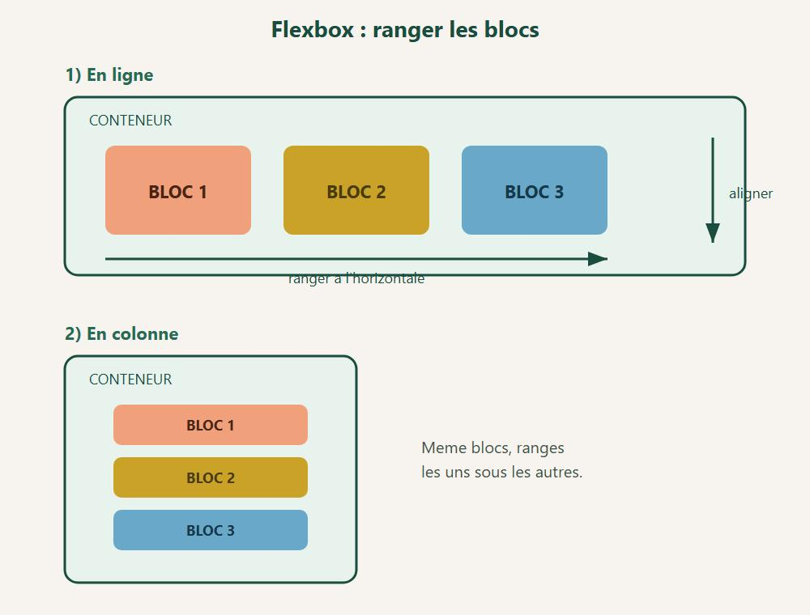
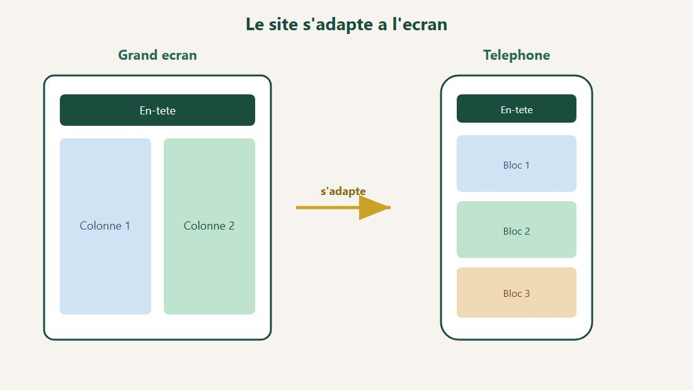
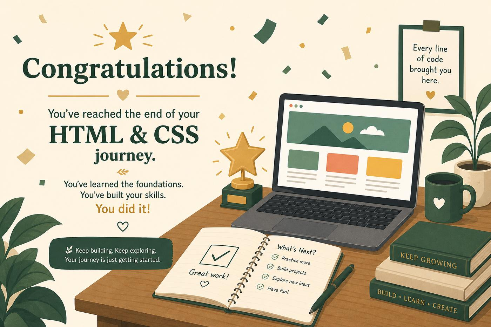

Sommaire
Clique un chapitre ou un sous-chapitre pour y aller.
Chapitre 1 - Salut, c'est quoi une page web ? Le navigateur HTML et CSS, deux roles Pourquoi commencer par ca ? Ce que tu vas savoir faire a la fin Erreur classique Exemple complet Mini defi A retenir En vrai, sur le terrain Mini defi Chapitre 2 - Ton premier fichier HTML De quoi tu as besoin Cree le fichier On explique ligne par ligne (sans stress) Les balises ouvrantes et fermantes A toi En vrai, sur le terrain Mini defi Chapitre 3 - Les balises, c'est des etiquettes Forme generale Quelques balises utiles tout de suite Balises seules (pas de fermeture) Attributs : des infos en plus HTML, c'est de l'ordre Erreur classique Mini exo En vrai, sur le terrain Mini defi Chapitre 4 - Titres, textes, paragraphes Les titres : h1 a h6 Les paragraphes Gras, italique, et cie Citations et code Commentaires (pour toi, pas pour le visiteur) A eviter A toi En vrai, sur le terrain Mini defi Chapitre 5 - Liens et images Les liens Les images Figure + legende (plus propre) A toi En vrai, sur le terrain Mini defi Chapitre 6 - Listes et tableaux Liste a puces Liste numerotee Liste dans une liste Les tableaux Quand utiliser un tableau ? A toi En vrai, sur le terrain Mini defi Chapitre 7 - Les formulaires La base Types d'input utiles Zone de texte longue Liste deroulante Requis Petit rappel A toi En vrai, sur le terrain Mini defi Chapitre 8 - CSS : on habille la page Trois facons d'ajouter du CSS Anatomie d'une regle CSS Commentaire CSS Premier test En vrai, sur le terrain Mini defi Chapitre 9 - Couleurs, polices, tailles Couleurs Polices Graisse et style Taille du texte Centrer un texte A toi En vrai, sur le terrain Mini defi Chapitre 10 - Les boites (margin, padding, border) Le modele en boite Exemple concret Margin vs padding (le piege classique) Largeur et hauteur box-sizing (important) Display : block ou inline A toi En vrai, sur le terrain Mini defi Chapitre 11 - Flexbox : ranger les blocs Idee simple Direction Aligner Centrer un truc au milieu (classique) Les enfants peuvent grandir A toi En vrai, sur le terrain Mini defi Chapitre 12 - Un site qui marche sur telephone La balise magique (viewport) Largeurs souples Media queries Tailles de doigt Teste vraiment Checklist mobile A toi En vrai, sur le terrain Mini defi Chapitre 13 - Mini-projet : ta page perso Objectif Structure HTML proposee CSS de demarrage (a personnaliser) Criteres de reussite Bonus En vrai, sur le terrain Mini defi Chapitre 14 - Ce qu'il faut retenir (+ la suite) En une minute Petites habitudes qui changent tout Erreurs normales La suite (quand tu seras chaud) En vrai, sur le terrain Mini defi Chapitre 17 - Atelier debug : la page est cassee Methode en 5 etapes Checklist HTML Checklist CSS Exemple de piege classique Exercice Ce qu'il faut retenir Chapitre 18 - Atelier : une mini page produit Objectif HTML de base CSS de base Variantes a tester Criteres de qualite Bonus Chapitre 19 - Accessibilite et bonnes manieres Textes a la place des images Contraste Liens clairs Boutons assez gros Titres dans l'ordre Clavier Mini checklist A toi Quiz final - Teste-toi ! Questions Reponses Score rapide Bravo. Ce que tu sais faire maintenant Petite mission (si tu veux) La suite, quand tu seras chaud
Chapitre 1
Chapitre 1 - Salut, c'est quoi une page web ?

A gauche la structure. A droite la deco. HTML puis CSS. Imagine une maison.
Le HTML, c'est les murs, les pieces, les portes. La structure.
Le CSS, c'est la peinture, les rideaux, les couleurs. L'apparence.
Sans HTML, y'a rien a regarder.
Sans CSS, ca marche, mais c'est moche. Genre page blanche avec du texte noir. Pas super sexy.
Le navigateur
Quand tu ouvres Chrome, Firefox, Edge ou Safari, tu lances un navigateur.
C'est lui qui lit ton code et te montre la page.
Tu ecris du texte special (le code).
Le navigateur le transforme en page.
HTML et CSS, deux roles
HTML dit : "ici un titre", "ici une image", "ici un bouton"
CSS dit : "ce titre est grand et bleu", "cette image a des bords ronds"
Les deux marchent ensemble. Toujours.
Pourquoi commencer par ca ?
Parce que presque tout le web repose la-dessus.
Les sites, les blogs, les boutiques... Au fond, y'a du HTML et du CSS.
Tu apprendras d'autres trucs plus tard (JavaScript, etc.).
Mais d'abord : les bases. Solides.
Ce que tu vas savoir faire a la fin
Creer une vraie page web
Ajouter du texte, des images, des liens
Changer les couleurs et les polices
Ranger les blocs proprement
Faire une petite page perso
Pas besoin d'etre un genie.
Juste de la curiosite et un peu de patience.
Allez, on attaque.
Erreur classique
Penser que le HTML sert a rendre une page jolie. Beaucoup de debutants cherchent comment "mettre du bleu" directement dans le HTML. La couleur, c'est le job du CSS.
Mauvais reflexe : melanger les deux roles des le depart.
Bon reflexe : d'abord une page HTML simple, puis on ajoute le CSS pour la forme.
Exemple complet
<!DOCTYPE html>
<html lang="fr">
<head>
<meta charset="UTF-8">
<title>Structure vs style</title>
<!-- Le CSS habille la page -->
<style>
body {
font-family: sans-serif;
background: #f0f0f0;
margin: 0;
padding: 20px;
}
h1 { color: #1a5f4a; }
.carte {
background: white;
padding: 16px;
border-radius: 8px;
}
</style>
</head>
<body>
<!-- Le HTML structure le contenu -->
<div class="carte">
<h1>Ma page</h1>
<p>Ici le HTML dit : c'est un titre, c'est un paragraphe.</p>
<p>Le CSS dit : fond gris clair, titre vert, carte blanche.</p>
</div>
</body>
</html>Mini defi
Ouvre un site que tu visites souvent
Clic droit > Inspecter (ou F12)
Clique sur une ligne de HTML dans l'inspecteur
Repere une regle CSS associee dans le panneau de droite
Note une chose structuree en HTML et une chose stylée en CSS
A retenir
HTML = murs et pieces (structure)
CSS = peinture et deco (apparence)
Le navigateur transforme ton code en page visible
Les deux travaillent toujours ensemble
Pas besoin d'etre expert pour commencer
En vrai, sur le terrain
Prends 10 minutes. Refais l'exemple du chapitre sans regarder.
Si tu bloques, relis juste la partie qui coinçe. Puis repars.
Le but c'est pas de memoriser. C'est de reconnaitre le motif la prochaine fois.
Mini defi
Ecris 3 lignes de notes a toi-meme :
1. ce que tu as compris
2. ce qui reste flou
3. un truc a retester demain
Garde ces notes. Elles valent plus qu'un long cours jamais relu.
Chapitre 2
Chapitre 2 - Ton premier fichier HTML

Ton fichier s'ouvre dans le navigateur. Magie. 
La page, c'est des boites rangees les unes dans les autres. On va creer un fichier. Rien de complique.
De quoi tu as besoin
1. Un editeur de texte. Bloc-notes marche. VS Code c'est mieux (gratuit).
2. Un navigateur (celui que tu utilises deja).
C'est tout. Pas de compte. Pas de carte bleue.
Cree le fichier
1. Ouvre ton editeur.
2. Copie le code ci-dessous.
3. Enregistre le fichier en index.html (attention a l'extension .html).
4. Double-clique dessus. Ca s'ouvre dans le navigateur.
<!DOCTYPE html>
<html lang="fr">
<head>
<meta charset="UTF-8">
<title>Ma premiere page</title>
</head>
<body>
<h1>Salut !</h1>
<p>Ca y est. J'ai fait une page web.</p>
</body>
</html>Si tu vois "Salut !" en gros, bravo. C'est bon.
On explique ligne par ligne (sans stress)
<!DOCTYPE html>
Ca dit au navigateur : "hey, c'est du HTML moderne". Toujours en haut.
<html lang="fr">
La page commence. lang="fr" = contenu en francais.
<head> ... </head>
La tete de la page. Infos pour le navigateur, pas vraiment ce que tu vois au milieu de l'ecran.
Exemple : le titre de l'onglet (<title>).
<meta charset="UTF-8">
Pour que les accents marchent. Crucial en francais. Sans ca, tu peux avoir des caracteres bizarres.
<body> ... </body>
Le corps. Tout ce que tu vois sur la page va ici.
<h1> = un gros titre.
<p> = un paragraphe.
Les balises ouvrantes et fermantes
Regarde : <p> ouvre. </p> ferme.
Le slash / veut dire "c'est fini pour ce truc".
Comme des parentheses. Tu ouvres, tu fermes.
A toi
Change le texte. Mets ton prenom dans le titre.
Rafraichis la page (F5).
Tu viens de modifier un site. Serieux.
En vrai, sur le terrain
Prends 10 minutes. Refais l'exemple du chapitre sans regarder.
Si tu bloques, relis juste la partie qui coinçe. Puis repars.
Le but c'est pas de memoriser. C'est de reconnaitre le motif la prochaine fois.
Mini defi
Ecris 3 lignes de notes a toi-meme :
1. ce que tu as compris
2. ce qui reste flou
3. un truc a retester demain
Garde ces notes. Elles valent plus qu'un long cours jamais relu.
Chapitre 3
Chapitre 3 - Les balises, c'est des etiquettes

Une balise, c'est une etiquette posee sur un contenu. Une balise, c'est une etiquette.
Elle dit au navigateur : "ce bout de texte, c'est un titre" ou "c'est un lien".
Exemple :
<strong>Important</strong>Ca met le mot en gras.
Quelques balises utiles tout de suite
Balise Role simple h1 a h6Titres (h1 le plus grand) pParagraphe aLien imgImage ul / ol / liListes divBoite generique (on range des trucs dedans) spanPetit bout de texte dans une phrase brRetour a la ligne (balise seule)
Balises seules (pas de fermeture)
Certaines n'ont pas de contenu a enfermer.
<br>
<img src="photo.jpg" alt="Une photo">br = aller a la ligne.
img = afficher une image.
Attributs : des infos en plus
Dans une balise, tu peux ajouter des details.
<a href="https://exemple.com">Clique ici</a>href = l'adresse du lien.
src = le chemin de l'image.
alt = texte si l'image ne charge pas (utile aussi pour l'accessibilite).
HTML, c'est de l'ordre
Le navigateur lit de haut en bas.
Ce que tu mets en premier apparait en premier (sauf si le CSS change l'ordre plus tard).
Erreur classique
Oublier de fermer une balise.
Ou ecrire </p> sans avoir ouvert <p>.
Si la page a l'air cassee, regarde d'abord ca.
Respire. Corrige. Rafraichis.
Mini exo
Ecris une page avec :
un titre h1
deux paragraphes
un mot en gras avec <strong>
Si ca s'affiche, tu as compris l'idee des balises.
En vrai, sur le terrain
Prends 10 minutes. Refais l'exemple du chapitre sans regarder.
Si tu bloques, relis juste la partie qui coinçe. Puis repars.
Le but c'est pas de memoriser. C'est de reconnaitre le motif la prochaine fois.
Mini defi
Ecris 3 lignes de notes a toi-meme :
1. ce que tu as compris
2. ce qui reste flou
3. un truc a retester demain
Garde ces notes. Elles valent plus qu'un long cours jamais relu.
Chapitre 4
Chapitre 4 - Titres, textes, paragraphes
Le texte, c'est le coeur de presque toutes les pages.
Les titres : h1 a h6
<h1>Le plus grand</h1>
<h2>Un cran en dessous</h2>
<h3>Encore un peu plus petit</h3>Regle simple :
Un seul h1 par page (le sujet principal)
Ensuite h2 pour les parties
h3 pour les sous-parties
C'est comme un plan de redaction.
Ca aide aussi Google a comprendre ta page. Mais surtout : ca aide le lecteur.
Les paragraphes
<p>Une idee par paragraphe, c'est souvent plus clair.</p>
<p>Tu peux en mettre plusieurs a la suite.</p>Ne mets pas tout dans un seul <p> geant.
Coupe. Respire. Lis a voix haute si besoin.
Gras, italique, et cie
<p>Voici un mot <strong>important</strong>.</p>
<p>Voici un mot <em>en emphase</em> (souvent en italique).</p>
<p>Un <mark>surlignage</mark> pour attirer l'oeil.</p>strong = vraiment important.
em = on insiste un peu.
Evite de tout mettre en gras. Sinon plus rien ne ressort.
Citations et code
<blockquote>
Une citation un peu longue.
</blockquote>
<p>En ligne, on peut citer <code>du code</code>.</p>code est pratique quand tu expliques une balise dans une phrase.
<!-- Ceci ne s'affiche pas sur la page -->Utile pour te laisser des notes. Ou desactiver un bout de code sans l'effacer.
A eviter
Utiliser h1 juste parce que "c'est plus gros" (utilise le CSS pour la taille)
Sauter de h1 a h4 sans raison
Des murs de texte sans retour
A toi
Ecris une mini page "Ma journee" :
h1 avec le titre
3 h2 (matin, apres-midi, soir)
un petit paragraphe sous chaque h2
En vrai, sur le terrain
Prends 10 minutes. Refais l'exemple du chapitre sans regarder.
Si tu bloques, relis juste la partie qui coinçe. Puis repars.
Le but c'est pas de memoriser. C'est de reconnaitre le motif la prochaine fois.
Mini defi
Ecris 3 lignes de notes a toi-meme :
1. ce que tu as compris
2. ce qui reste flou
3. un truc a retester demain
Garde ces notes. Elles valent plus qu'un long cours jamais relu.
Chapitre 5
Chapitre 5 - Liens et images
Sans liens, le web serait juste des pages isolees.
Sans images, ce serait un peu triste.
Les liens
<a href="https://danielcraft.fr">Aller sur DanielCraft</a>a comme "ancre" (anchor en anglais).
href = ou ca mene.
Lien vers une autre page de ton site
<a href="contact.html">Contact</a>Lien qui ouvre un nouvel onglet
<a href="https://exemple.com" target="_blank" rel="noopener">Site externe</a>target="_blank" = nouvel onglet.
rel="noopener" = petite secu. Prends le reflexe.
Lien mailto
<a href="mailto:salut@exemple.com">M'ecrire</a>Ca ouvre le mail (si le visiteur a un logiciel mail configure).
Les images
<img src="chat.jpg" alt="Un chat orange sur un canape">src = ou est le fichier image.
alt = description. Toujours. Pour ceux qui ne voient pas l'image, et pour le referencement.
Ou mettre tes images ?
Le plus simple au debut :
mon-site/
index.html
images/
chat.jpgAlors :
<img src="images/chat.jpg" alt="Un chat orange">Largeur (debutant)
<img src="images/chat.jpg" alt="Un chat" width="300">Plus tard, tu gereras ca mieux avec le CSS. Pour l'instant, c'est ok.
<figure>
<img src="images/chat.jpg" alt="Un chat orange">
<figcaption>Mon chat, Roi du canape.</figcaption>
</figure>A toi
1. Ajoute un lien vers une page que tu aimes.
2. Ajoute une image (une photo de chez toi, un dessin, peu importe).
3. Ecris un vrai alt.
Si le lien marche et l'image s'affiche, nickel.
En vrai, sur le terrain
Prends 10 minutes. Refais l'exemple du chapitre sans regarder.
Si tu bloques, relis juste la partie qui coinçe. Puis repars.
Le but c'est pas de memoriser. C'est de reconnaitre le motif la prochaine fois.
Mini defi
Ecris 3 lignes de notes a toi-meme :
1. ce que tu as compris
2. ce qui reste flou
3. un truc a retester demain
Garde ces notes. Elles valent plus qu'un long cours jamais relu.
Chapitre 6
Chapitre 6 - Listes et tableaux
Des listes partout. Courses, etapes, menus...
Des tableaux quand tu compares des infos.
Liste a puces
<ul>
<li>Pain</li>
<li>Lait</li>
<li>Beurre</li>
</ul>ul = unordered list (liste sans ordre strict).
li = list item (un element).
Liste numerotee
<ol>
<li>Ouvrir l'editeur</li>
<li>Ecrire le HTML</li>
<li>Sauvegarder</li>
<li>Ouvrir dans le navigateur</li>
</ol>ol = ordered list. Utile pour des etapes.
Liste dans une liste
<ul>
<li>Fruits
<ul>
<li>Pommes</li>
<li>Bananes</li>
</ul>
</li>
<li>Legumes</li>
</ul>Ca marche. Mais n'en abuse pas, sinon ca devient illisible.
Les tableaux
<table>
<thead>
<tr>
<th>Langage</th>
<th>Role</th>
</tr>
</thead>
<tbody>
<tr>
<td>HTML</td>
<td>Structure</td>
</tr>
<tr>
<td>CSS</td>
<td>Style</td>
</tr>
</tbody>
</table>
table = le tableautr = une ligneth = cellule d'en-tetetd = cellule normale
Quand utiliser un tableau ?
Quand les donnees sont vraiment en lignes et colonnes.
Pas pour "faire un layout" de page. Ca, c'est le job du CSS.
A toi
Fais une liste de 5 choses que tu veux apprendre.
Puis un petit tableau : jour / activite (ex. Lundi / HTML).
En vrai, sur le terrain
Prends 10 minutes. Refais l'exemple du chapitre sans regarder.
Si tu bloques, relis juste la partie qui coinçe. Puis repars.
Le but c'est pas de memoriser. C'est de reconnaitre le motif la prochaine fois.
Mini defi
Ecris 3 lignes de notes a toi-meme :
1. ce que tu as compris
2. ce qui reste flou
3. un truc a retester demain
Garde ces notes. Elles valent plus qu'un long cours jamais relu.
Chapitre 7
Un formulaire, c'est quand tu demandes des infos a quelqu'un.
Nom, email, message... Tu vois le genre.
La base
<form action="#" method="post">
<label for="prenom">Prenom</label>
<input id="prenom" name="prenom" type="text">
<button type="submit">Envoyer</button>
</form>form enveloppe tout.
label = le texte a cote du champ (important pour la clarte).
input = le champ.
button = le bouton.
for du label doit matcher id de l'input. Comme ca, cliquer sur le texte focus le champ. Pratique.
<input type="text" placeholder="Ton prenom">
<input type="email" placeholder="toi@exemple.com">
<input type="password">
<input type="number" min="1" max="120">
<input type="checkbox"> J'accepte
<input type="radio" name="choix" value="a"> Option A
<input type="radio" name="choix" value="b"> Option Bplaceholder = texte fantome dans le champ. Disparait quand tu ecris.
Zone de texte longue
<label for="msg">Message</label>
<textarea id="msg" name="msg" rows="5"></textarea>Liste deroulante
<label for="ville">Ville</label>
<select id="ville" name="ville">
<option value="paris">Paris</option>
<option value="lyon">Lyon</option>
<option value="marseille">Marseille</option>
</select>Requis
<input type="email" required>Le navigateur refuse d'envoyer si c'est vide. Utile, mais ce n'est pas une vraie securite cote serveur. Pour plus tard.
Petit rappel
Pour l'instant, action="#" veut dire "on n'envoie nulle part de special".
Plus tard tu brancheras ca a un vrai traitement (PHP, API...).
La on apprend juste a construire le formulaire.
A toi
Fais un formulaire "Contact" avec :
nom
email
message
bouton Envoyer
En vrai, sur le terrain
Prends 10 minutes. Refais l'exemple du chapitre sans regarder.
Si tu bloques, relis juste la partie qui coinçe. Puis repars.
Le but c'est pas de memoriser. C'est de reconnaitre le motif la prochaine fois.
Mini defi
Ecris 3 lignes de notes a toi-meme :
1. ce que tu as compris
2. ce qui reste flou
3. un truc a retester demain
Garde ces notes. Elles valent plus qu'un long cours jamais relu.
Chapitre 8
Chapitre 8 - CSS : on habille la page
La le HTML est nu. On va lui mettre des habits.
Trois facons d'ajouter du CSS
1. Dans le fichier HTML (balise style)
<head>
<style>
p {
color: blue;
}
</style>
</head>Pratique pour tester. Moins propre sur un gros site.
2. Fichier CSS separe (le mieux)
style.css :
Dans le HTML :
<link rel="stylesheet" href="style.css">Mets le <link> dans le <head>.
3. En ligne (a eviter souvent)
<p style="color: blue;">Coucou</p>Ca marche. Mais ca devient vite le bordel. Garde ca pour des cas rares.
Anatomie d'une regle CSS
selecteur {
propriete: valeur;
}Exemple :
h1 {
color: tomato;
font-size: 40px;
}Le selecteur dit "qui".
Les proprietes disent "quoi changer".
/* Ceci est une note pour toi */Premier test
1. Cree style.css a cote de index.html
2. Relie-les avec <link>
3. Mets tous les p en bleu
4. Rafraichis
Si c'est bleu, CSS est branche. Nice.
En vrai, sur le terrain
Prends 10 minutes. Refais l'exemple du chapitre sans regarder.
Si tu bloques, relis juste la partie qui coinçe. Puis repars.
Le but c'est pas de memoriser. C'est de reconnaitre le motif la prochaine fois.
Mini defi
Ecris 3 lignes de notes a toi-meme :
1. ce que tu as compris
2. ce qui reste flou
3. un truc a retester demain
Garde ces notes. Elles valent plus qu'un long cours jamais relu.
Chapitre 9
Chapitre 9 - Couleurs, polices, tailles
Maintenant on rend ca vivant.
Couleurs
body {
color: #222222; /* texte */
background: #f7f3ee; /* fond */
}
h1 {
color: teal;
}Tu peux ecrire :
un nom (red, teal, navy)
un code hex (#ff6600)
du rgb (rgb(255, 100, 50))
Hex, c'est le plus courant sur le web.
#000000 = noir. #ffffff = blanc.
Astuce : des outils comme un color picker t'aident a choisir. Pas besoin de retenir les codes par coeur.
Polices
body {
font-family: Georgia, "Times New Roman", serif;
font-size: 18px;
line-height: 1.6;
}font-family = la police.
Si la premiere n'existe pas sur l'ordi, il prend la suivante.
line-height: 1.6 = respirer entre les lignes. Plus agreable a lire.
Polices "safe" pour commencer
Arial, sans-serif (moderne, sans empattement)Georgia, serif (un peu plus litteraire)
Plus tard tu pourras charger des polices web (Google Fonts, etc.). Pas obligatoire au debut.
Graisse et style
h1 {
font-weight: 700; /* gras */
}
em {
font-style: italic;
}Taille du texte
h1 { font-size: 2.5rem; }
p { font-size: 1rem; }px = pixels. Simple.
rem = relatif a la taille de base. Plus souple pour l'accessibilite.
Au debut, px c'est ok. Tu passeras a rem quand tu seras a l'aise.
Centrer un texte
h1 {
text-align: center;
}left, right, center, justify.
A toi
Fond doux (pas blanc crame si tu veux etre cosy)
Texte sombre pour bien lire
Titre colore
Paragraphes un peu plus grands (16-18px minimum)
En vrai, sur le terrain
Prends 10 minutes. Refais l'exemple du chapitre sans regarder.
Si tu bloques, relis juste la partie qui coinçe. Puis repars.
Le but c'est pas de memoriser. C'est de reconnaitre le motif la prochaine fois.
Mini defi
Ecris 3 lignes de notes a toi-meme :
1. ce que tu as compris
2. ce qui reste flou
3. un truc a retester demain
Garde ces notes. Elles valent plus qu'un long cours jamais relu.
Chapitre 10
Chapitre 10 - Les boites (margin, padding, border)

Margin dehors, padding dedans, border entre les deux. En CSS, presque tout est une boite.
Un paragraphe = une boite. Une image = une boite. Un bouton = une boite.
Le modele en boite
De l'exterieur vers l'interieur :
1. margin (marge exterieure - l'espace autour)
2. border (la bordure)
3. padding (marge interieure - l'air dans la boite)
4. le contenu
Exemple concret
.carte {
background: white;
border: 2px solid #333;
padding: 20px;
margin: 16px;
border-radius: 12px;
}border-radius arrondit les coins. Sympa.
Margin vs padding (le piege classique)
padding = espace dans la boite (entre le bord et le texte)
margin = espace hors de la boite (entre cette boite et les autres)
Tu te tromperas. Tout le monde se trompe. Tu corrigeras.
Largeur et hauteur
.boite {
width: 300px;
max-width: 100%;
height: auto;
}max-width: 100% evite que ca deborde sur telephone. Bon reflexe.
box-sizing (important)
* {
box-sizing: border-box;
}Sans ca, padding + border peuvent agrandir la boite de facon bizarre.
Avec border-box, width inclut padding et border. Plus intuitif.
Mets ca presque toujours en haut de ton CSS.
Display : block ou inline
block : prend toute la largeur (comme p, div, h1)inline : reste dans le flux du texte (comme span, a sans style)inline-block : un mix utile parfois
span.badge {
display: inline-block;
padding: 4px 8px;
background: #eee;
}A toi
Cree une classe .carte avec fond, padding, bordure, coins ronds.
Applique-la a une div qui contient un titre et un paragraphe.
En vrai, sur le terrain
Prends 10 minutes. Refais l'exemple du chapitre sans regarder.
Si tu bloques, relis juste la partie qui coinçe. Puis repars.
Le but c'est pas de memoriser. C'est de reconnaitre le motif la prochaine fois.
Mini defi
Ecris 3 lignes de notes a toi-meme :
1. ce que tu as compris
2. ce qui reste flou
3. un truc a retester demain
Garde ces notes. Elles valent plus qu'un long cours jamais relu.
Chapitre 11
Chapitre 11 - Flexbox : ranger les blocs

Flexbox range les blocs en ligne ou en colonne. Flexbox, c'est l'outil magique pour aligner des trucs.
Menu en ligne, colonnes, centrage... Ca sauve des vies.
Idee simple
Tu as un parent (le conteneur).
Dedans, des enfants (les items).
Tu dis au parent : "range tes enfants en flex".
<div class="rangée">
<div>A</div>
<div>B</div>
<div>C</div>
</div>Attends - apostrophe. Mieux :
<div class="rangee">
<div>A</div>
<div>B</div>
<div>C</div>
</div>.rangee {
display: flex;
gap: 16px;
}gap = l'espace entre les enfants. Clean.
Direction
.rangee {
display: flex;
flex-direction: row; /* cote a cote (defaut) */
}
.colonne {
display: flex;
flex-direction: column; /* l'un sous l'autre */
}Aligner
.rangee {
display: flex;
justify-content: space-between; /* horizontal si row */
align-items: center; /* vertical si row */
}justify-content = sur l'axe principal.
align-items = sur l'axe croise.
Tu vas experimenter. C'est normal. Change une valeur, regarde, recommence.
Centrer un truc au milieu (classique)
.centre {
display: flex;
justify-content: center;
align-items: center;
min-height: 200px;
}Les enfants peuvent grandir
.rangee > div {
flex: 1; /* partage l'espace equitablement */
}A toi
Fais une barre avec un logo a gauche et deux liens a droite.
Indice : display: flex + justify-content: space-between + align-items: center.
En vrai, sur le terrain
Prends 10 minutes. Refais l'exemple du chapitre sans regarder.
Si tu bloques, relis juste la partie qui coinçe. Puis repars.
Le but c'est pas de memoriser. C'est de reconnaitre le motif la prochaine fois.
Mini defi
Ecris 3 lignes de notes a toi-meme :
1. ce que tu as compris
2. ce qui reste flou
3. un truc a retester demain
Garde ces notes. Elles valent plus qu'un long cours jamais relu.
Chapitre 12
Chapitre 12 - Un site qui marche sur telephone

Meme site, grand ecran ou telephone : ca s'adapte. La plupart des gens regardent le web sur mobile.
Si ta page est illisible sur telephone, c'est rate.
La balise magique (viewport)
Dans le <head> :
<meta name="viewport" content="width=device-width, initial-scale=1">Sans ca, le telephone croit que ta page fait la largeur d'un grand ecran et zoom de facon horrible.
Mets-la. Toujours.
Largeurs souples
img {
max-width: 100%;
height: auto;
}
.conteneur {
width: min(100% - 2rem, 700px);
margin-inline: auto;
}Traduction : la boite ne depasse pas 700px, et sur petit ecran elle prend la place dispo avec un peu d'air.
.menu {
display: flex;
gap: 1rem;
}
@media (max-width: 600px) {
.menu {
flex-direction: column;
}
}En dessous de 600px de large, le menu passe en colonne.
Tu adaptes. Tu ne fais pas "un autre site". Tu ajustes.
Tailles de doigt
Sur mobile, les boutons trop petits c'est l'enfer.
Vise une zone cliquable confortable (genre 40px+ de haut).
Teste vraiment
Reduis la fenetre de ton navigateur
Ou ouvre les outils developpeur (F12) et le mode telephone
Ou regarde sur ton vrai telephone (en local c'est plus technique, on verra plus tard)
Checklist mobile
meta viewport presente
images qui ne debordent pas
texte lisible sans zoomer
boutons assez grands
pas de scroll horizontal bizarre
A toi
Prends ta page et ajoute le viewport.
Passe le menu en colonne sous 600px.
Verifie en redimensionnant la fenetre.
En vrai, sur le terrain
Prends 10 minutes. Refais l'exemple du chapitre sans regarder.
Si tu bloques, relis juste la partie qui coinçe. Puis repars.
Le but c'est pas de memoriser. C'est de reconnaitre le motif la prochaine fois.
Mini defi
Ecris 3 lignes de notes a toi-meme :
1. ce que tu as compris
2. ce qui reste flou
3. un truc a retester demain
Garde ces notes. Elles valent plus qu'un long cours jamais relu.
Chapitre 13
Chapitre 13 - Mini-projet : ta page perso
Le but : une petite page a toi, claire et perso. On assemble tout. Une page sur toi (ou un perso invente, libre a toi).
Objectif
Une page unique index.html + style.css avec :
un en-tete (nom + petit menu)
une section "A propos"
une section "Ce que j'aime" (liste)
une image
un petit formulaire de contact
un pied de page
Structure HTML proposee
<!DOCTYPE html>
<html lang="fr">
<head>
<meta charset="UTF-8">
<meta name="viewport" content="width=device-width, initial-scale=1">
<title>Ma page perso</title>
<link rel="stylesheet" href="style.css">
</head>
<body>
<header class="entete">
<strong>Ton Prenom</strong>
<nav class="menu">
<a href="#apropos">A propos</a>
<a href="#likes">J'aime</a>
<a href="#contact">Contact</a>
</nav>
</header>
<main class="conteneur">
<section id="apropos">
<h1>Salut, moi c'est ...</h1>
<p>Deux ou trois phrases sur toi.</p>
<img src="images/moi.jpg" alt="Photo de ...">
</section>
<section id="likes">
<h2>Ce que j'aime</h2>
<ul>
<li>...</li>
<li>...</li>
<li>...</li>
</ul>
</section>
<section id="contact">
<h2>Me contacter</h2>
<form action="#" method="post">
<label for="nom">Nom</label>
<input id="nom" name="nom" type="text" required>
<label for="email">Email</label>
<input id="email" name="email" type="email" required>
<label for="msg">Message</label>
<textarea id="msg" name="msg" rows="4"></textarea>
<button type="submit">Envoyer</button>
</form>
</section>
</main>
<footer class="pied">
<p>Fait avec HTML et CSS. Et un peu de cafe.</p>
</footer>
</body>
</html>CSS de demarrage (a personnaliser)
* { box-sizing: border-box; }
body {
margin: 0;
font-family: Georgia, serif;
font-size: 18px;
line-height: 1.6;
color: #222;
background: #f4f1ec;
}
.entete {
display: flex;
justify-content: space-between;
align-items: center;
padding: 1rem 1.5rem;
background: #1f6f5b;
color: white;
}
.menu {
display: flex;
gap: 1rem;
}
.menu a { color: white; }
.conteneur {
width: min(100% - 2rem, 720px);
margin: 2rem auto;
}
img {
max-width: 100%;
height: auto;
border-radius: 12px;
}
form {
display: flex;
flex-direction: column;
gap: 0.5rem;
}
input, textarea, button {
font: inherit;
padding: 0.6rem 0.8rem;
}
button {
background: #1f6f5b;
color: white;
border: 0;
border-radius: 8px;
cursor: pointer;
}
.pied {
text-align: center;
padding: 2rem;
color: #555;
}
@media (max-width: 600px) {
.entete { flex-direction: column; gap: 0.75rem; }
.menu { flex-direction: column; align-items: center; }
}Criteres de reussite
Ca s'ouvre sans erreur visible
Le menu saute aux sections (#apropos etc.)
Lisible sur petite largeur
Tes couleurs a toi (change le vert si tu veux)
Bonus
Ajoute une deuxieme page projets.html
Relie-les avec des liens
Mets 3 "projets" inventes dans une liste
Quand c'est fait : tu as une vraie mini vitrine.
Pas parfaite. Mais a toi. C'est le plus important.
En vrai, sur le terrain
Prends 10 minutes. Refais l'exemple du chapitre sans regarder.
Si tu bloques, relis juste la partie qui coinçe. Puis repars.
Le but c'est pas de memoriser. C'est de reconnaitre le motif la prochaine fois.
Mini defi
Ecris 3 lignes de notes a toi-meme :
1. ce que tu as compris
2. ce qui reste flou
3. un truc a retester demain
Garde ces notes. Elles valent plus qu'un long cours jamais relu.
Chapitre 14
Chapitre 14 - Ce qu'il faut retenir (+ la suite)
Presque au bout. Encore un quiz juste apres, puis on cloture.
En une minute
HTML = structure (les pieces de la maison)
CSS = style (peinture et deco)
Balises = etiquettes (h1, p, a, img...)
CSS = selecteur + proprietes
Boites = margin, border, padding, contenu
Flexbox = ranger les blocs
Viewport + media queries = ok sur telephone
Petites habitudes qui changent tout
1. Indente ton code (lisibilite)
2. Ferme tes balises
3. Mets toujours un alt sur les images
4. Relie un vrai fichier .css
5. Teste souvent (modifie, sauvegarde, F5)
6. Une erreur ? Regarde la derniere chose que tu as changee
Erreurs normales
Oublier le <link> vers le CSS
Mauvais chemin d'image (src)
Typo dans un nom de classe
Oublier le viewport
Ca arrive a tout le monde. Le debug, c'est juste de la chasse au detail.
La suite (quand tu seras chaud)
Un peu plus de CSS (grid, animations legeres)
JavaScript pour rendre la page interactive
Accessibilite (clavier, contrastes, lecteurs d'ecran)
Mettre ton site en ligne
Mais d'abord : le quiz. Puis tu pourras vraiment dire "c'est fait".
En vrai, sur le terrain
Prends 10 minutes. Refais l'exemple du chapitre sans regarder.
Si tu bloques, relis juste la partie qui coinçe. Puis repars.
Le but c'est pas de memoriser. C'est de reconnaitre le motif la prochaine fois.
Mini defi
Ecris 3 lignes de notes a toi-meme :
1. ce que tu as compris
2. ce qui reste flou
3. un truc a retester demain
Garde ces notes. Elles valent plus qu'un long cours jamais relu.
Chapitre 15
Chapitre 17 - Atelier debug : la page est cassee
Ca arrive. Souvent. Et c'est normal.
La, on apprend a chercher sans paniquer.
Methode en 5 etapes
1. Relis la derniere chose que tu as changee
2. Regarde la console (F12) s'il y a du JS plus tard ; pour HTML/CSS, regarde surtout le resultat
3. Verifie les balises ouvertes / fermees
4. Verifie les chemins (href, src, link)
5. Simplifie : commente un gros bloc, reteste
Checklist HTML
<!DOCTYPE html> presentlang="fr"charset + viewportchaque balise ouverte est fermee
un seul h1 principal
Checklist CSS
le <link rel="stylesheet" href="style.css"> est bien la
le nom du fichier est exact (casse comprise)
la classe HTML match la classe CSS (.carte vs carte)
pas de ; oublie a la fin d'une propriete... en vrai CSS tolere parfois, mais sois propre
Exemple de piege classique
<link rel="stylesheet" href="Style.css">Alors que le fichier s'appelle style.css.
Sur certains systemes, ca casse. Garde les noms simples, en minuscules.
Exercice
Casse volontairement ta page (enlève une balise fermante).
Puis repare-la.
Tu apprendras plus en 10 minutes comme ca qu'en regardant 1h de video.
Ce qu'il faut retenir
Le debug, c'est pas "etre nul".
C'est le vrai boulot. Les gens qui avancent, c'est ceux qui supportent de chercher.
Chapitre 16
Chapitre 18 - Atelier : une mini page produit
On fait une page "produit" simple.
Comme une fiche boutique, sans boutique.
Objectif
Une page avec :
nom du produit
prix
courte description
liste d'avantages
bouton "Ajouter" (meme s'il ne fait rien encore)
joli CSS mobile-friendly
HTML de base
<!DOCTYPE html>
<html lang="fr">
<head>
<meta charset="UTF-8">
<meta name="viewport" content="width=device-width, initial-scale=1">
<title>Casque SoftBeat</title>
<link rel="stylesheet" href="style.css">
</head>
<body>
<main class="fiche">
<p class="tag">Nouveau</p>
<h1>Casque SoftBeat</h1>
<p class="prix">79 €</p>
<p>Un casque confortable pour la maison, les cours, et les trains un peu longs.</p>
<h2>Pourquoi il est cool</h2>
<ul>
<li>Leger</li>
<li>Bonne autonomie</li>
<li>Son clair</li>
</ul>
<a class="btn" href="#">Ajouter au panier</a>
</main>
</body>
</html>CSS de base
* { box-sizing: border-box; }
body {
margin: 0;
font-family: Georgia, serif;
background: #f3f6f4;
color: #14221c;
}
.fiche {
width: min(100% - 2rem, 560px);
margin: 2rem auto;
background: white;
padding: 1.5rem;
border-radius: 14px;
border: 1px solid #c5d4cc;
}
.tag {
display: inline-block;
background: #fff4d6;
padding: 0.2rem 0.55rem;
border-radius: 999px;
font-size: 0.85rem;
}
.prix {
font-size: 1.8rem;
color: #1a4d3e;
font-weight: bold;
}
.btn {
display: inline-block;
margin-top: 1rem;
background: #1a4d3e;
color: white;
text-decoration: none;
padding: 0.7rem 1rem;
border-radius: 10px;
}
@media (max-width: 600px) {
.fiche { margin: 1rem; }
}Variantes a tester
1. Change le produit (livre, plante, jeu)
2. Ajoute une image
3. Passe le bouton en pleine largeur sur mobile
4. Ajoute une section "Avis"
Criteres de qualite
Lisible sans zoomer sur telephone
Hierarchie claire (titre > prix > texte)
Pas 15 polices differentes
Un seul objectif : comprendre le produit
Bonus
Ajoute un faux tableau de tailles / couleurs.
Garde-le simple. Une page propre bat une page surchargee.
Chapitre 17
Chapitre 19 - Accessibilite et bonnes manieres
Accessibilite, ca veut dire : le plus de gens possible peuvent utiliser ta page.
Y compris avec un clavier, un lecteur d'ecran, ou un contraste faible.
Pas besoin d'etre expert. Juste quelques reflexes.
Textes a la place des images
<img src="chat.jpg" alt="Chat orange assis sur un canape">Pas : alt="image" (inutile).
Pas : alt="" sauf si l'image est purement decorative.
Contraste
Texte gris clair sur fond blanc = fatigue.
Texte sombre sur fond clair = mieux.
Si tu plisses les yeux pour lire, change.
Liens clairs
Mauvais : "Clique ici"
Mieux : "Voir les tarifs"
Le texte du lien doit dire ou on va.
Boutons assez gros
Sur telephone, un tout petit bouton c'est l'enfer.
Laisse de l'air. Vise une zone confortable.
Titres dans l'ordre
h1 puis h2 puis h3.
Pas de saut bizarre juste pour la taille.
La taille, c'est le CSS.
Clavier
Essaye : touche Tab sur ta page.
Tu dois pouvoir atteindre liens et boutons.
Si tu te perds, simplifie.
Mini checklist
alt utilescontraste ok
liens explicites
titres ranges
zones cliquables confortables
viewport present
A toi
Reprends ta page perso.
Corrige 3 points d'accessibilite.
C'est deja un vrai plus.
Quiz
Quiz final - Teste-toi !
Avant de dire "j'ai fini", on joue un peu.
Lis la question. Cherche la reponse dans ta tete.
Les corriges sont juste apres. Pas de triche... enfin, si tu veux. C'est ton livre.
Questions
Q1. HTML, ca sert surtout a quoi ?
A) Mettre des couleurs
B) Structurer le contenu de la page
C) Remplacer le navigateur
Q2. CSS, ca sert surtout a quoi ?
A) Donner le style (couleurs, tailles, rangement...)
B) Creer la base de donnees
C) Envoyer des emails
Q3. Ou places-tu le vrai contenu visible de la page ?
A) Dans <head>
B) Dans <body>
C) Dans <!DOCTYPE html>
Q4. Quelle balise donne le titre principal (le plus important) ?
Q5. Pour un lien, quel attribut donne l'adresse ?
Q6. Sur une image, pourquoi mettre alt ?
A) Pour faire joli
B) Pour decrire l'image si elle ne s'affiche pas (et pour l'accessibilite)
C) Pour agrandir l'image
Q7. Dans une feuille CSS, c'est quoi un selecteur ?
A) Le nom du fichier
B) La partie qui dit "sur quoi" s'applique le style
C) Un bouton du navigateur
Q8. Margin et padding, c'est quoi la difference simple ?
A) Margin = espace dehors, padding = espace dedans
B) C'est exactement pareil
C) Padding = couleur, margin = police
Q9. Flexbox, ca sert a quoi ?
A) Compresser les images
B) Ranger des blocs facilement (ligne ou colonne)
C) Creer un mot de passe
Q10. Quelle balise meta aide le site sur telephone ?
A) charset
B) viewport
C) stylesheet
Q11. Ou mets-tu en general le <link rel="stylesheet" ...> ?
A) Dans le <head>
B) Apres </html>
C) Dans une image
Q12. Une liste a puces, c'est surtout :
A) <ol> + <li>
B) <ul> + <li>
C) <table> + <td>
Reponses
1. B - HTML structure.
2. A - CSS style.
3. B - le <body>.
4. B - <h1>.
5. C - href.
6. B - description / accessibilite.
7. B - le "sur quoi".
8. A - dehors / dedans.
9. B - ranger les blocs.
10. B - viewport.
11. A - dans le <head>.
12. B - <ul> + <li>.
Score rapide
10 a 12 : nickel. Tu as les bases.
7 a 9 : bien. Relis juste 2-3 chapitres faibles.
moins de 7 : normal. Reprends les chapitres 2, 8 et 10. Puis reviens.
L'important c'est pas d'etre parfait du premier coup.
C'est de comprendre un peu plus a chaque essai.
Final
Bravo.

Bravo. Tu es alle au bout. C'est deja une vraie victoire. Serieusement : bravo.
Tu es alle au bout d'un vrai premier livre sur le web.
Pas juste "j'ai regarde une video". Tu as lu. Tu as essaye. Tu as (surement) plante. Puis tu as continue.
C'est exactement comme ca que ca marche.
Ce que tu sais faire maintenant
Creer une page HTML propre
Ajouter texte, liens, images, listes, formulaires
Habiller avec du CSS
Ranger avec Flexbox
Penser un minimum au telephone
C'est deja enorme pour un debut.
Petite mission (si tu veux)
Reprends ta page perso du chapitre 13.
Ameliore juste 3 trucs :
1. une meilleure couleur
2. une image avec un vrai alt
3. un menu qui marche bien sur petite largeur
Montre-la a quelqu'un.
Meme a ton chat. Le chat jugera pas.
La suite, quand tu seras chaud
JavaScript. Pour rendre la page un peu vivante.
Mais pas ce soir si tu es fatigue. Repose-toi. Tu l'as merite.
Encore bravo.
Et a bientot pour la suite.